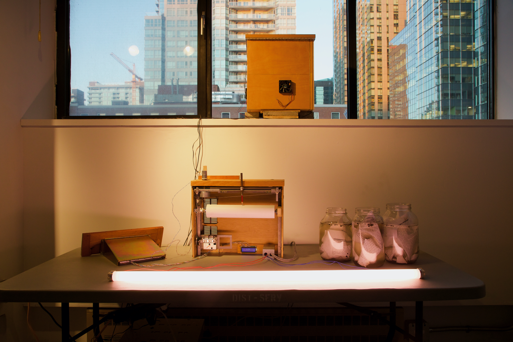
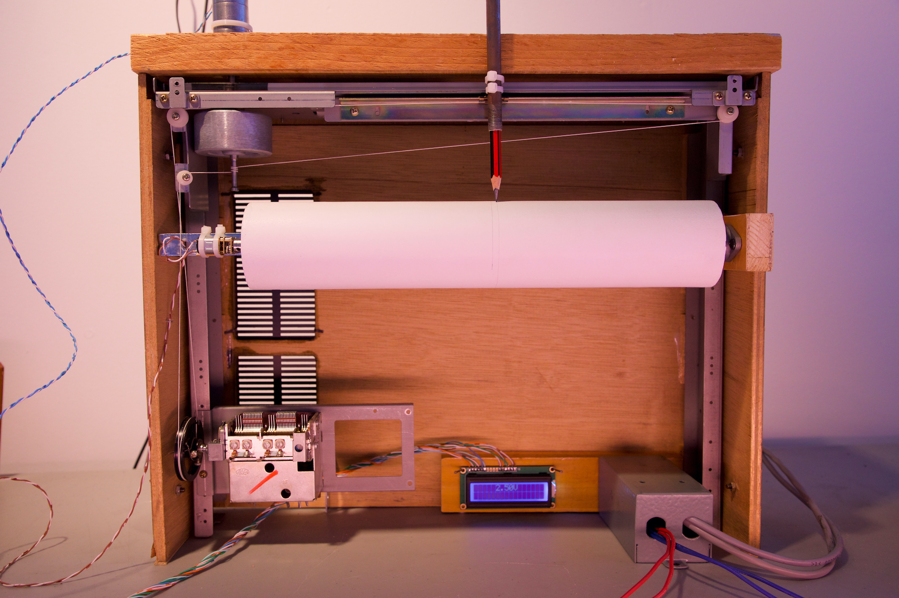
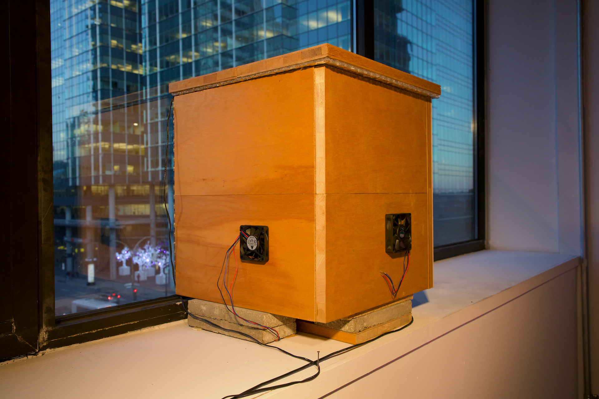
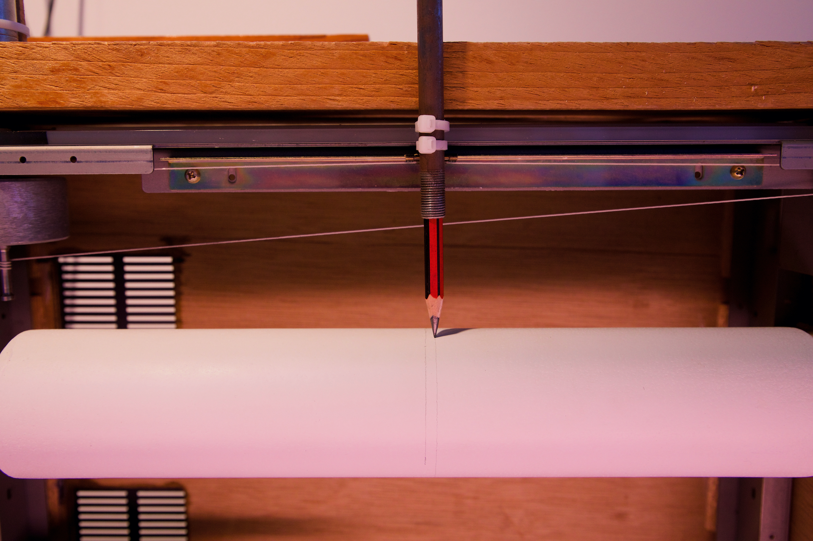
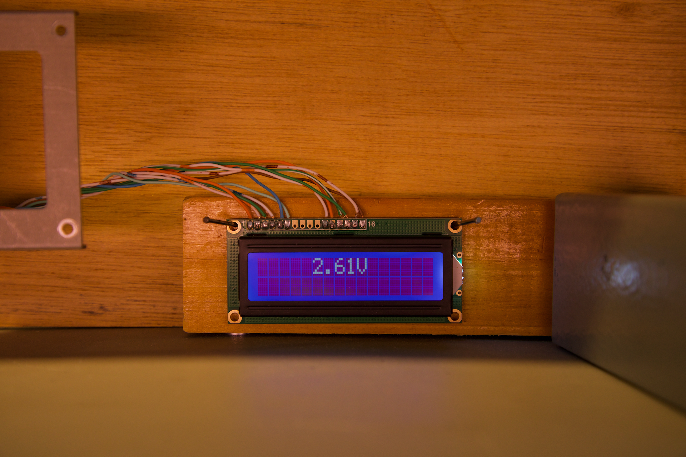
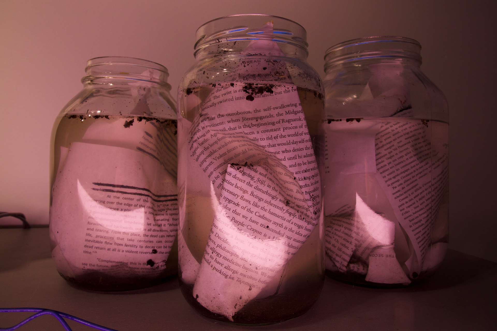

compost clockwork, 2022.

FR //
compost clockwork récolte la chaleur produite par une pile de compost pour marquer le passage du temps, inexactement et inutilement. Un module thermoélectrique alimente deux moteurs, dessinant très lentement une ligne sur la surface d’une cylindre blanc. La ligne devient éventuellement une spirale, puis s'arrête une fois le compost stabilisé.
ENG //
compost clockwork harvests the heat produced by a compost pile to mark the passage of time, unreliably and uselessly. A thermoelectrical module powers two small motors, slowly drawing a line on the surface of a white cylinder. The line eventually becomes a spiral, then stops when the compost cools down.




